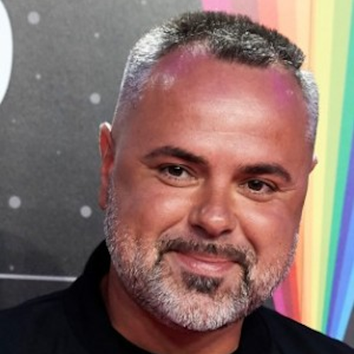

Aitana cerró este martes su cuarta y última actuación en el Palau Sant Jordi de
Barcelona y lo hizo con un mensaje
de apoyo al catalán y a su uso social ante miles de seguidores. La cantante aprovechó la última fecha de su gira
en Barcelona para dirigirse al público en esta lengua
y reivindicar su importancia: “El catalán es lo más importante que tenemos en Cataluña”, sentenció.
La cantante confesó que quería expresarse en catalán durante este último concierto en Barcelona como muestra de
cariño hacia su tierra y hacia una lengua con la que mantiene un fuerte vínculo desde la infancia.
También destacó la importancia de consumir cultura en catalán para quienes, como ella, han
crecido en Cataluña.
Los vídeos de la cantante hablando en catalán se difundieron rápidamente en las redes sociales y generaron
numerosas reacciones entre sus seguidores. Algunas publicaciones acumularon miles de visualizaciones
pocas horas después de su difusión.

Aunque protege su identidad hasta el punto que su nombre de pila no se conoce públicamente, sí se sabe que
Beny Jr procede del
barrio de La Florida, en L'Hospitalet de Llobregat, como Morad, y que su ascendencia
magrebí ha inspirado su nombre artístico, pues Beny Jr
es nacido en el municipio de Beni Ahamed Garbía, situado en Chauen, Marruecos.
‘Valkyrie’, tema que cantará en Urban Block, es una producción marca de la casa de
Beny Jr llena de los ingredientes que le han catapultado a la fama,
basándose en una mezcla de trap, autotune y reverb configurada alrededor de una melodía devastada y llena de una
profunda melancolía.
Aunque la composición se divide en una estructura clásica de estrofa-estribillo, cada una de las partes suena en
realidad como una variación de la misma melodía, como si sus demonios le atormentaran.

El reconocido DJ y productor musical español Juan Magán vivió un momento inesperado
durante las actividades de los Premios HEAT 2026,
al recibir por sorpresa el prestigioso galardón a DJ del Año mientras participaba en un animado
showcase realizado antes de la gala principal.
A lo largo de su brillante trayectoria, ha popularizado auténticos himnos del electro-latino como Bailando
por ahí, Mal de amores y He llorado (como un niño),
canciones que forman parte del repertorio festivo internacional.
Este reconocimiento destaca su relevante presencia en la industria musical y su contribución
esencial a la difusión de los sonidos y ritmos latinos por todo el mundo.